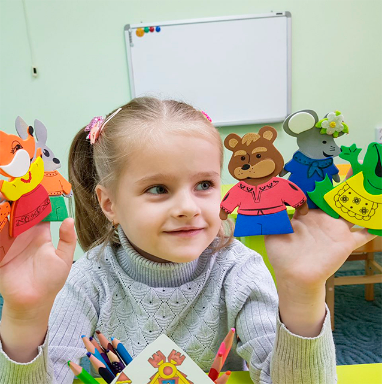

Мы работаем
для Вашего ребёнка!
Развиваем, улучшаем и корректируем речевые, двигательные, эмоциональные и когнитивные способности. Наш подход прогрессивный и комплексный, сочетает опыт квалифицированных специалистов и уникальные методики!
почему выбирают нас
Уникальные методики
Опытные специалисты
Индивидуальный подход
Подбор программы
Удобное время зантий

ЛОГОПЕДИЯ
Дети с различными формами речевых нарушений (брадилия, тахилалия, заикание). Общее недоразвитие речи 1,2,3 уровня ЗРР, ЗПР, ЗПРР, дизграфия, дизлексия. Психологическая подготовка к школе, развитие внимания, усидчивости, памяти, понимания речи, построение предложений, постановка лексико-грамматической стороны речи. Постановка звуков, исправление искажений. Логопедическая работа с пациентами после установки протезов беркетов, пластин, имплантатов.
ПодробнееПОДГОТОВКА К ШКОЛЕ
Подготовка к школе детей в возрасте 5-7 лет. Репетиторство для детей 1-4 класса Выполнение домашнего задания 1-4 класс Арт-терапия , психологическая подготовка к школе дети 5-10 лет. Время посещения центра подбирается индивидуально для Вас
ПодробнееСхема работы
1
Вы записываетесь
на прием
на прием
2
Получаете
консультацию
консультацию
3
мы подберем
методику
методику
4
Получаете
результат
результат
МАМАМ И ПАПАМ НА ЗАМЕТКУ
КТО ЕСТЬ КТО (Логопед или Дефектолог???)
"В России нет специальности логопед-дефектолог! Дорогие мамы! Хочется пояснить, кто такой дефектолог и кто такой логопед. Во-первых, в нашей стране ВУЗы никогда не готовили и...
ПодробнееС какого возраста необходимо начинать занятия с логопедом?
Очень часто родителей интересует, с какого возраста необходимо начинать занятия с логопедом. Однозначно нельзя ответить на этот вопрос, многое зависит от индивидуальных особенностей...
ПодробнееРаспространенные ошибки родителей, пагубно влияющие на речевое развитие ребенка :
Часто, кажется, что ничего не предвещало беды, но у ребенка «из ничего» возникают сложности в овладении устной речью. Затем, как следствие...
ПодробнееО центре
Логопедический детский центр «Буквоежка» - это образовательная организация, в которой работают лучшие педагоги и логопеды в городе Владикавказ. В нашем пункте проводится подготовка к школе, а также репетиторство среди учащихся начальных классов. Квалифицированные специалисты, среди которых есть педагог психолог, арт терапевт Татьяна Валентиновна, найдут подход к каждому ребёнку, помогут преодолеть психологические и физиологические барьеры на пути к знаниям и развитию. Учитель логопед Лейла Эльхановна центра работает по эффективным нетрадиционным методикам развития речи, благодаря которым малыш уже спустя несколько занятий будет разговаривать более чётко и понятно. Педагоги начальных классов помогут в игровой форме побудить интерес ребёнка к обучению, подготовят детей к первому классу. Мы гарантируем индивидуальный подход к каждому ребёнку. Родители могут находиться во время занятий в нашем пункте, для них «Буквоежка» также может предложить бесплатные консультации. Приходите в логопедический пункт «Буквоежка» и мы поможет Вам вырастить гармоничную и успешную личность!
Запись на консультацию
Подготовка к школе
Владикавказ, ул. Пашковского 30
Логопедия
Владикавказ, ул. Горького 49